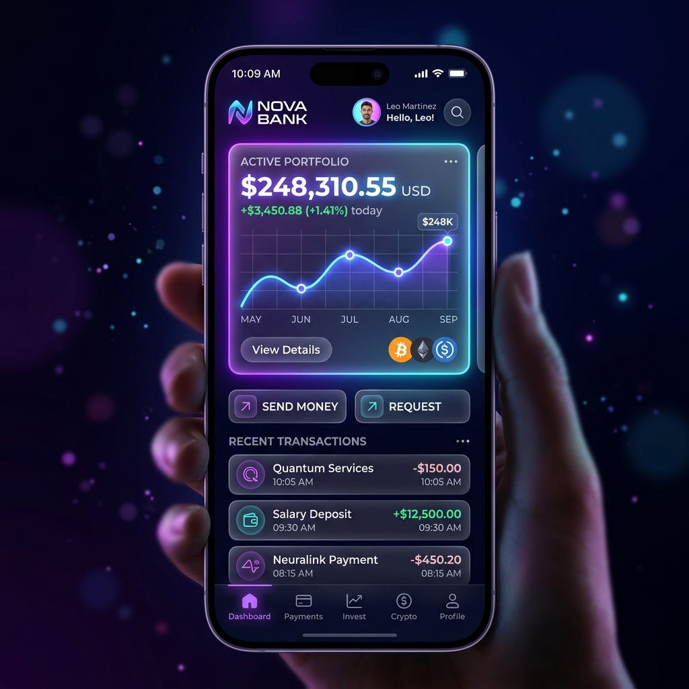

CONSULTING / AI STRATEGY
「正解」のない経営課題に、
「正解」のない経営課題に、
数十億通りのシミュレーションを。
経営者の孤独な決断を、圧倒的なデータで支える。STRATEGY-Xは、マクロ経済、地政学リスク、そして自社の財務データを統合し、「もしあの企業を買収したらどうなるか」を数秒で予測する経営陣向けのAIコパイロットです。
THE REARVIEW MIRROR
「過去のデータ」しか見ないコンサルティングの限界
従来の戦略コンサルタントが提示する分厚いレポートは、完成した瞬間から古くなります。変化の激しい現代において、「過去の成功事例」や「静的なエクセルモデル」に依存した意思決定は、企業を致命的な方向違いへと導くリスクを孕んでいます。
SCENARIO ENGINE
未来のシナリオを「分岐」させるAI
${f.t}
${f.d}
${f.t}
${f.d}
${f.t}
${f.d}
EXECUTIVE VIEW
全社データを統合する「経営のダッシュボード」
財務、人事、営業、マーケティング。社内のあらゆるSaaSからAPIでリアルタイムにデータを吸い上げ、社長が「今、会社のどこから血が流れているか（ボトルネック）」を1枚の美しいグラフィックボードで直感的に把握できるようにします。
EXIT STRATEGY
「撤退」という最も難しい決断の自動化
新規事業を立ち上げるよりも、赤字事業から撤退する方が精神的ハードルが高く、経営者はサンクコスト（埋没費用）に縛られます。「この事業の黒字化確率は現在12%です。今四半期での売却を強く推奨します」と、AIが感情を排した冷徹な決断を後押しします。
STRATEGIC PIVOT
Case Study | 東証プライム上場の消費財メーカー
新興国への大型投資を検討していたが、社内の意見が割れて1年間足踏みしていた企業。STRATEGY-Xでのシミュレーションにより、現地の法改正リスクと競合の参入確率を加味した結果、「直接投資ではなく、現地のローカル企業とのジョイント・ベンチャーが最適解」というレポートを10分で出力。迅速な意思決定と市場シェアの獲得に成功しました。
OUR VISION
経営は、もっと科学に近づく
人間から「決断する勇気」を奪うことはありません。私たちは、その決断に至るまでの「暗闇」を、テクノロジーの光で極限まで照らし出す役割を担います。